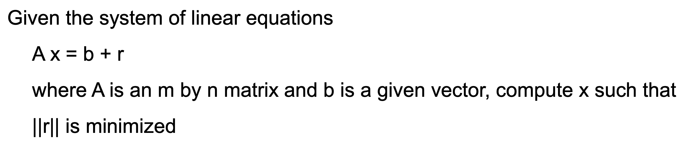
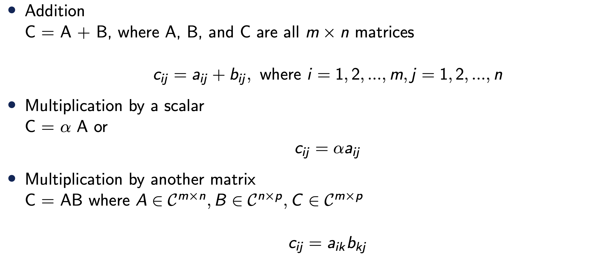
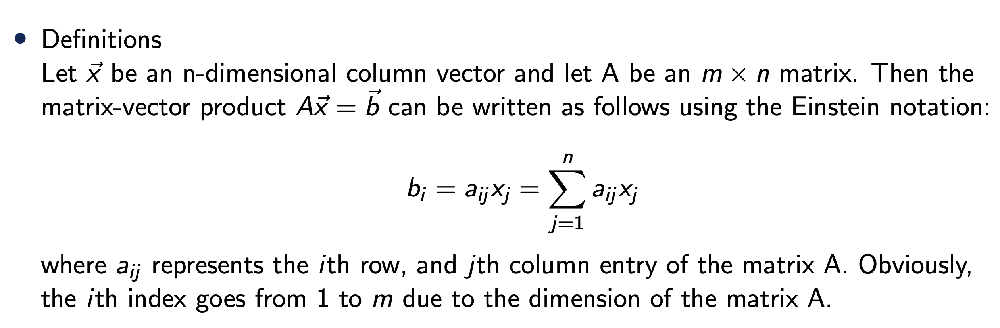
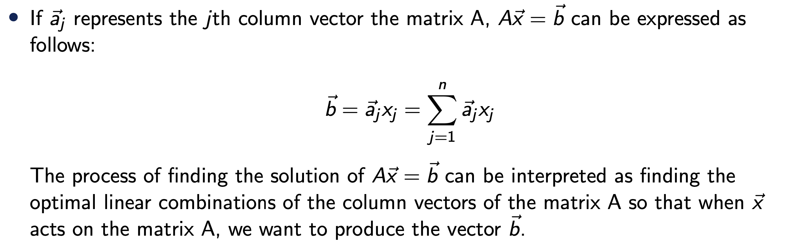
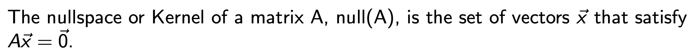
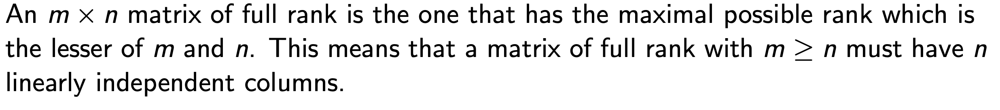
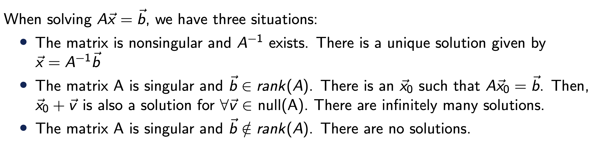
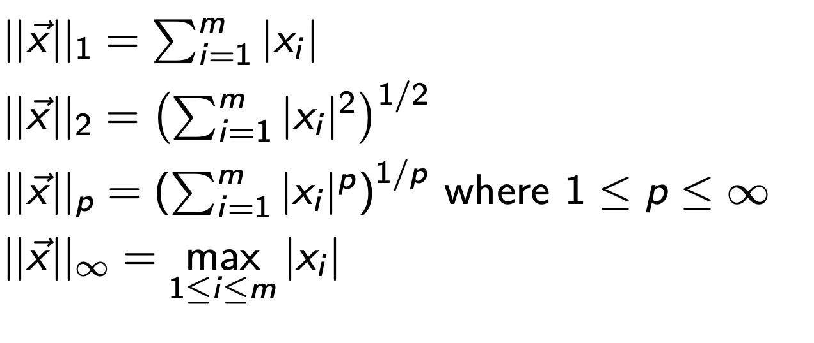
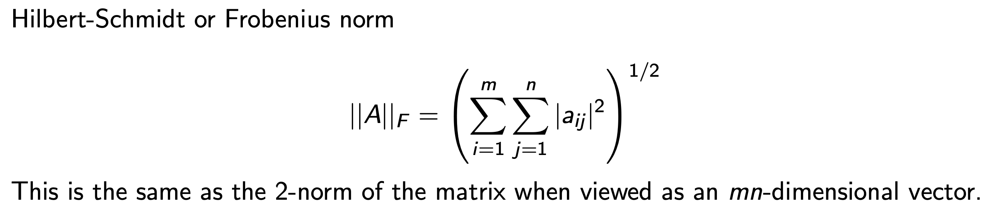
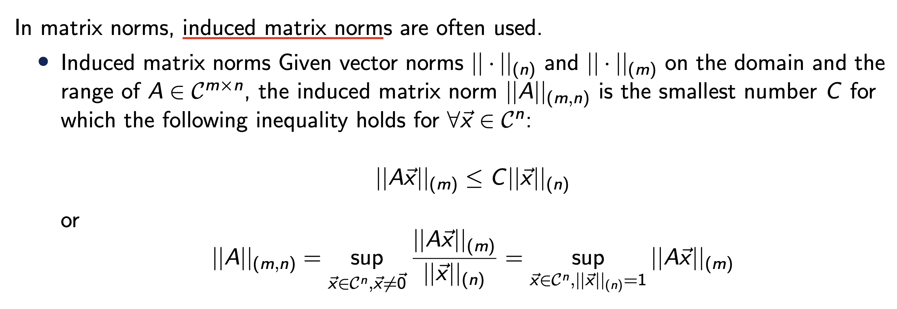

---
{
  "layout": "note",
  "title": "1. Intro - Numerical Linear Algebra",
  "journal": true,
  "section": "Study",
  "topic": "Computational Linear Algebra",
  "excerpt": "",
  "classes": "wide",
  "permalink": "/blog/mechanical-engineering/computational-linear-algebra/ch1-intro-numerical-linear-algebra/",
  "study_area": "Mechanical",
  "date": "2025-09-04",
  "source_url": "https://jeffdissel.tistory.com/m/219",
  "header": {
    "teaser": "/blog/mechanical-engineering/computational-linear-algebra/ch1-intro-numerical-linear-algebra/images/img-001.png"
  }
}
---
{% raw %}<ol>
<li>Intro - Numerical Linear Algebra<br />
Numerical Linear Algebra에서<br />
우리가 하고자 하는 것은.<br />
물리법칙으로 세운 다음과 같은 지배 방정식의 해 x를 구하는 것.<br />
<br />
굉장히 간단해 보이지만,<br />
상황에 따라서 푸는 방식이 달라야 하며,<br />
유일한 해가 존재한는지 수많은 해가 존재하는지도 확인해야한다.<br />
간단한 용어들부터 정리하고 넘어가자.<br />
A is a m x n matrix.<br />
m = n 인 경우 -&gt; square system<br />
m &gt; n -&gt; Overdetermined system<br />
m &lt; n -&gt; underdetermined system<br />
이라고 부른다.<br />
rank of A<br />
-&gt; determine uniquness of the solution.<br />
지금부터 우리는 위 matrix equation을 어떻게<br />
컴퓨터를 이용하여 해를 구할지 여러 방법론에 대해서 다룰 예정이다.<br />
깊게 들어가기 앞서서<br />
학부시간에 배웠던 Linear algebra에서 필요한 개념들을 다시한번 훑고 넘어가자.<br />
========================================================<br />
기본적인 addition, multiplcation of scalar and matrix는 다음과 같다.<br />
<br />
대학원 수업을 들어야 이해가 됬던 부분은 바로 이 부분이다.<br />
vector = 2nd order tensor * vector<br />
<br />
'텐서는 어떠한 벡터를 다른 벡터로 mapping하는 도구<br />
'라고 생각하면,<br />
모든게 쉬워진다.<br />
즉 위의 식에서 Matrix A는 벡터 x를 b로 mapping하는 연산자이다.<br />
여기서, 또다른 중요한 개념은<br />
range of Matrix<br />
<br />
즉 A 행렬의 column vector들의 선형결합으로 만들 수 있는 모든 모든 벡터들의 집합이 바로<br />
range(A)<br />
위 개념을 이용해서 우리가 풀고자하는 Ax = b Matrix equation을 다른 각도로 접근해보면,<br />
A의 column vector (a1 ... an )의 선형결합을 적절히 해서 b를 찾는게<br />
Ax = b에서 해를 구하는 과정이라고 할 수 있다.<br />
<br />
즉 A의 열벡터를 어떻게 선형결합을 하면 b를 얻을 수 있을까??<br />
의 답을 하는 과정이 x를 구하는 과정이라는 것.<br />
반대로 null(A)는 열벡터의<br />
선형조합으로 0 벡터<br />
를 만드는 모든 x의 집합을 null(A)라고 한다.<br />
<br />
더하여, A (m x n Matrix) 에서 A가 full rank라면 n개의 독립적인 column 이 있어야 한다.<br />
<br />
자 위에서 배운 개념들을 토대로, 이제 우리가 풀고자하는 Ax = b<br />
Matrix Equation을 살펴보자.<br />
A의 역행렬이 존재하면<br />
Non singular<br />
, otherwise<br />
singular<br />
<br />
우리는 A와 b를 가지고 uniquness of solution을 결정할 수 있다<br />
그리고 아주아주 중요하게<br />
n x n Square Matrix A 가 Full rank라는 말은 다음과 동치이다.<br />
(frequently 등장)</li>
<li>A is nonsingular (has inverse Matrix)</li>
<li>rank(A) = n</li>
<li>null(A) = 0</li>
<li>range(A) = Cn</li>
<li>det(A) is not zero</li>
<li>0 is not an eigenvalue of A<br />
이후에 굉장히 굉장히 많이 등장하는 Norm of Vector<br />
</li>
<li>Norm of Matrix<br />
(여러 정의들이 존재한다. 그 중에서 자주 쓰이는 두가지 정의를 마지막으로 살펴보자)<br />
<br />
<br />
<br />
</li>
</ol>{% endraw %}
